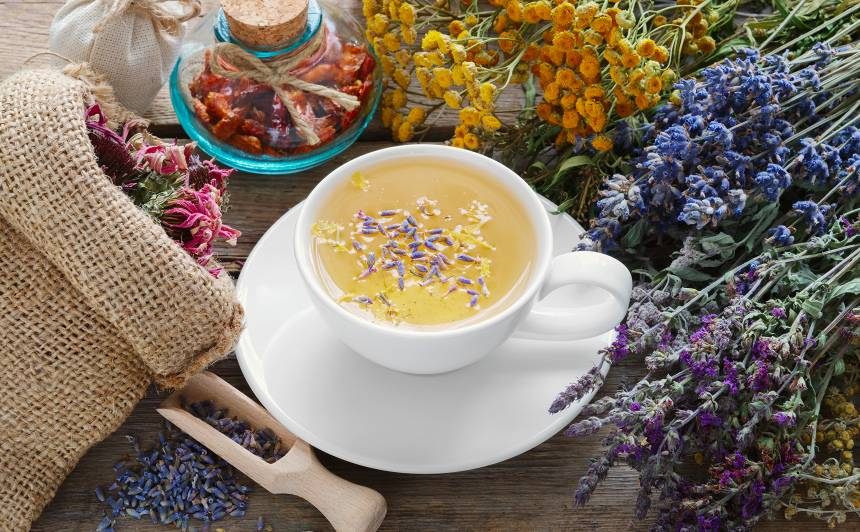
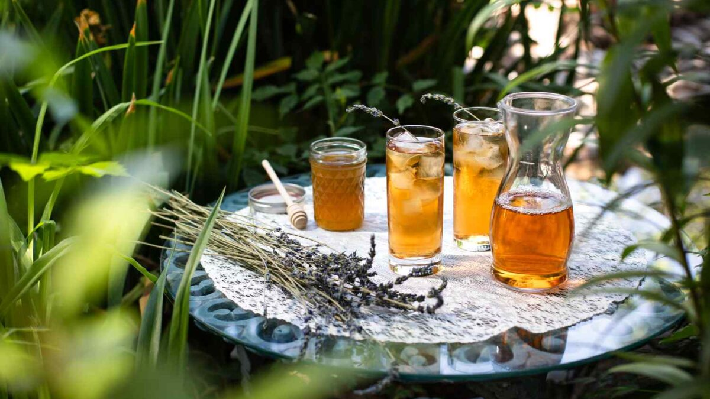

Pavasara zaļā tēja
Pavasaris ir ideāls laiks vieglai, svaigai zaļajai tējai. Tā palīdz pamodināt ķermeni un prātu un rada mierīgu sākumu dienai.
Lasīt vairākPavasaris ir ideāls laiks vieglai, svaigai zaļajai tējai. Tā palīdz pamodināt ķermeni un prātu un rada mierīgu sākumu dienai.
Lasīt vairāk“Tēja ir klusuma malks, kas ļauj dienai uz mirkli apstāties.”

Pat viena tasīte tējas var kļūt par nelielu rituālu.
Lasīt vairāk
Kumelīte, piparmētra un lavanda ir sabiedrotie mierīgam vakaram.
Lasīt vairāk
Atvēsinoša un atsvaidzinoša, ideāla karstām dienām.
Lasīt vairāk